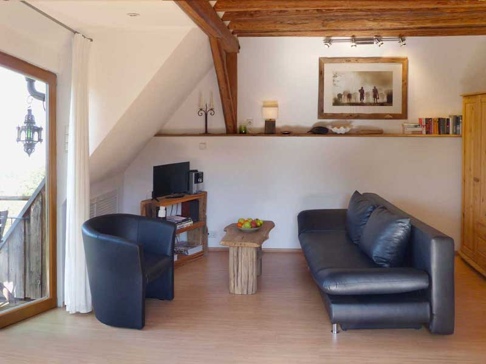
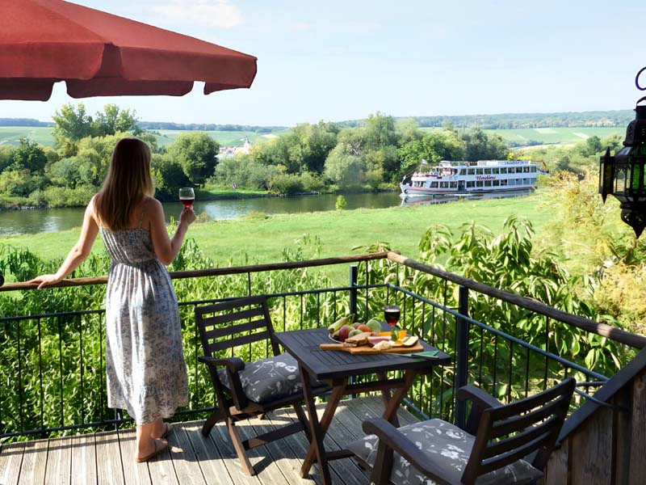
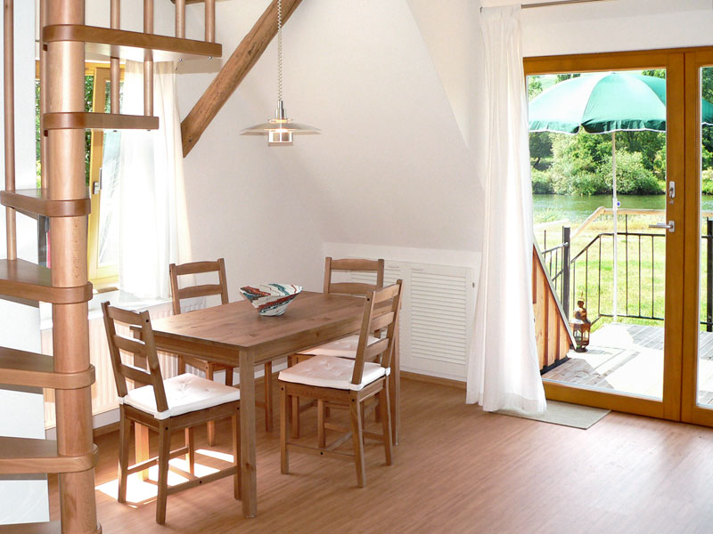
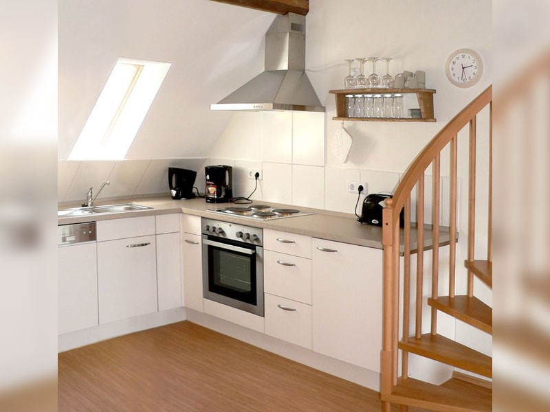
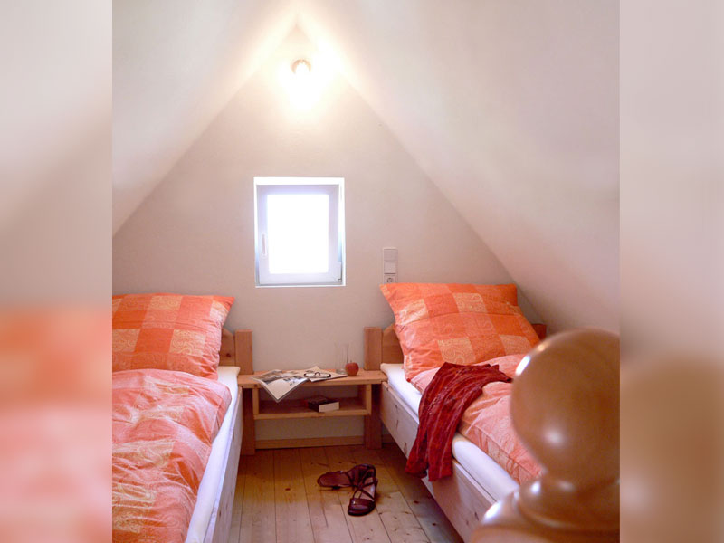
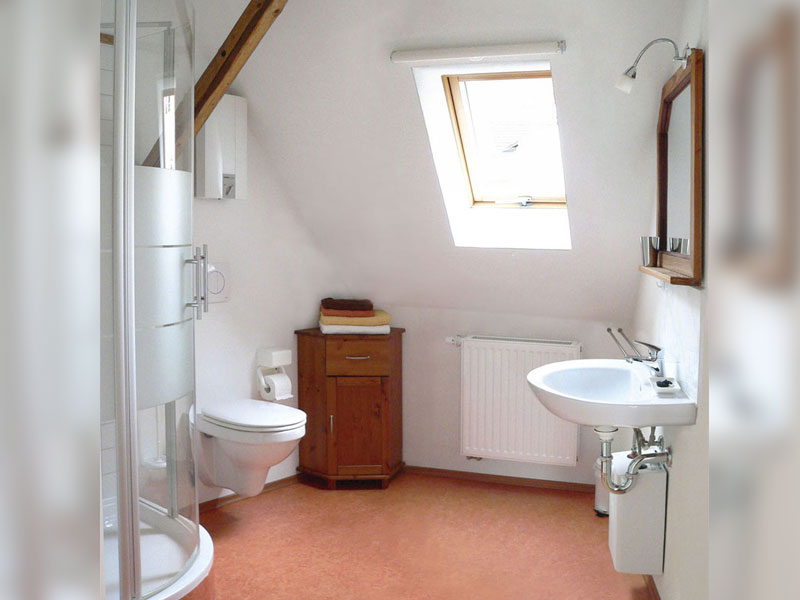
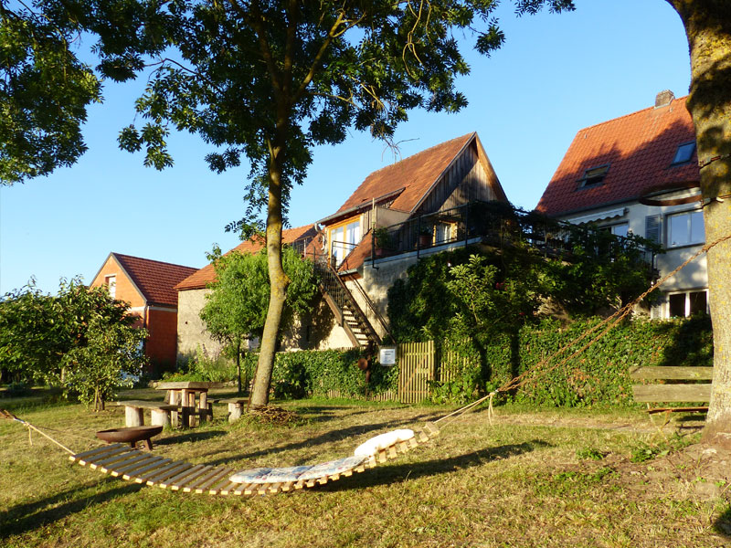
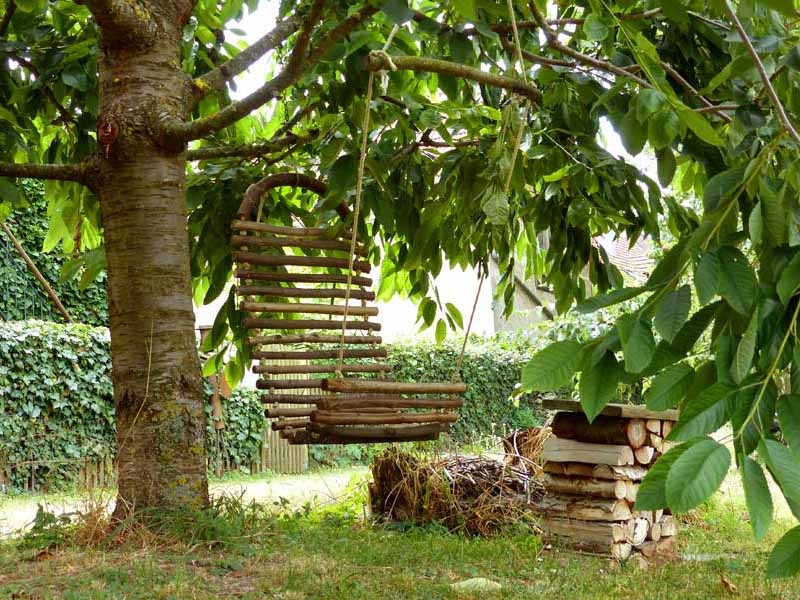
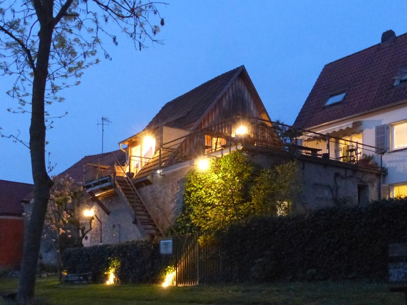
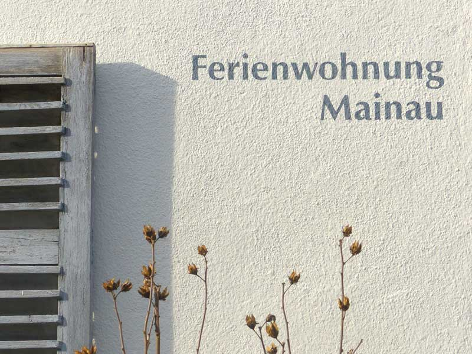

Apartment
Maingasse N° 13
Maingasse N° 13
am Flussufer mit Mainblick
Für das ca. 40 m² große Apartment mit sonniger Dachterrasse/Loggia wurde das Dach einer ehemaligen Scheune umgebaut. Direkt am Mainufer gelegen bietet die Wohnung einen exklusiven Panoramablick auf den Fluss, die Mainwiesen und die gegenüberliegenden Weinberge.
Mietpreis für 2 Personen
- 65,- Euro pro Nacht ab 5 Übernachtungen
- 70,- Euro pro Nacht bei weniger als 5 Übernachtungen
- für Kleinkinder treffen wir gerne individuelle Absprachen
Mietdauer: Von Ostern bis Oktober beträgt die Mindestmietdauer 5 Nächte, in der restlichen Zeit 3 Nächte.
Beschreibung des Apartments
Aufteilung
- Wohnraum, Küche, Essbereich mit offenem Grundriss
- Badezimmer
- Schlafgalerie über eine Wendeltreppe
- Sonnige Dachterrasse/Loggia mit Gartenmöbeln und Sonnenschirm
Ausstattung
- Schlafsofa, Sessel, Kleiderschrank und Bücherauswahl
- Einbauküche mit Herd, Backofen, Dunstabzug, Spülmaschine und Kühlschrank
- 2 Einzelbetten, Bettwäsche, Handtücher, TV, Stereoanlage und W-LAN
Besonderheiten
- Sehr ruhige Lage direkt an Mainwiesen und Flussufer
- Mainradweg vor der Tür, Mainfähre ca. 100 m entfernt
- keine Haustiere, Nichtraucherwohnung
Belegungskalender
Ihr Wunschtermin schon belegt? Wir empfehlen die Fewo der Familie Rapp in Obervolkach.